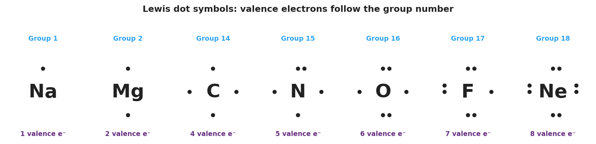

01 Phenomenon
Sodium and neon sit right next to each other on the Periodic Table. Yet sodium reacts violently — it fizzes and ignites the moment it touches water — while neon does essentially nothing; it glows quietly in a sealed tube and refuses to react. Two neighbors, opposite behavior. Your teacher draws each one’s electron-dot diagram side by side: sodium has a single lonely dot, neon has a full ring of eight. The hidden difference becomes visible.
02 Driving question
How can a simple dot diagram predict how molecules will form?
03 Notice & wonder
| I notice… | I wonder… |
|---|---|
Turn & Talk #1: Look at the dot panel your teacher is projecting. Count the dots on carbon, then on oxygen, then read the group numbers above them. In one sentence, what is the pattern between the group number and the number of dots?
04 Initial model
Before your teacher names the rule: here are the pieces of a water molecule — two hydrogen atoms (1 dot each) and one oxygen atom (6 dots). Arrange them so that, by sharing electrons, oxygen ends up surrounded by 8 dots and each hydrogen ends up with 2. Draw the finished molecule in the box.
| Draw your H₂O here: |
|---|
How many electrons surround your oxygen atom when you finished? _______________
How many electrons surround each hydrogen? _______________
Did any atom give away its electrons, or did the atoms share them? _______________
05 Investigate
Part 1 — ABCs: Predict the dot count before you draw
Using only the panel on the board and each atom’s group number, predict how many dots (valence electrons) each atom should have. Do not draw yet — just write the number.
| Atom | Group | My predicted # of dots |
|---|---|---|
| Fluorine (F) | 17 | |
| Beryllium (Be) | 2 | |
| Phosphorus (P) | 15 | |
| Argon (Ar) | 18 |
After you draw them in Part 2, return and check: were your predictions correct? What surprised you?
After checking: _______________________________________________
Part 2 — Draw the Lewis dot diagrams
Draw the electron-dot diagram for each atom. Place one dot per side (top, bottom, left, right) before doubling up. State the valence-electron count from the group number.
| Atom | Group | Valence e⁻ | Draw the diagram |
|---|---|---|---|
| H | 1 | ||
| C | 14 | ||
| N | 15 | ||
| O | 16 | ||
| F | 17 | ||
| Ne | 18 |
Part 3 — Build a molecule: F₂
Two fluorine atoms each have one unpaired dot. When they come together, that pair of unpaired dots becomes a shared (bonding) pair — a single bond. Draw the finished F₂ molecule. Then count: how many electrons surround each fluorine when you are done?
| Draw F₂ here: |
|---|
Electrons around each fluorine: _______________ Is that a full octet? _______________
Part 4 — Reading the pattern panel
Look at figures/lewis_valence_panel.png:

Which atom on the panel already has a full octet (8 dots)? _______________
Which atom has only one valence electron? _______________
Carbon has 4 dots. How many more electrons does carbon need to reach an octet, and how many bonds does that predict carbon will form?
06 Make it make sense
For each atom or molecule below, draw the Lewis dot diagram and answer the question. These are the same kinds of diagrams you practiced in the Investigation — confirm your skill here.
1. Carbon (C, Group 14) — Draw it. How many valence electrons? _______ How many bonds does the octet rule predict it forms? _______
| Draw C here: |
|---|
2. Fluorine (F, Group 17) — Draw it. How many valence electrons? _______ How many are unpaired and available to bond? _______
| Draw F here: |
|---|
3. Oxygen (O, Group 16) — Draw it. How many valence electrons? _______ How many more does it need to reach an octet? _______
| Draw O here: |
|---|
4. The molecule F₂ — Draw the Lewis structure showing the shared pair. How many electrons surround each fluorine in the finished molecule? _______
| Draw F₂ here: |
|---|
07 Key vocabulary
- valence electrons
- the electrons in an atom's outermost shell; these are the electrons shown as dots in a Lewis diagram and the only ones that take part in bonding. For a main-group atom, the number of valence electrons equals the group number (Group 16 → 6 valence electrons)
- Lewis dot diagram
- a drawing of an atom (or molecule) that shows the element symbol with its valence electrons as dots placed around the four sides, one per side before pairing; also called an electron-dot diagram. It makes an atom's bonding capacity visible at a glance
- octet rule
- the principle that atoms gain, lose, or share electrons until they are surrounded by eight valence electrons (a full outer shell), the stable arrangement of the noble gases; hydrogen and helium are the exception, being full at two electrons
Use each term in a sentence about today’s investigation. Do not copy the definition — describe something you actually drew or observed.
valence electrons: _______________________________________________ _______________________________________________
Lewis dot diagram: _______________________________________________ _______________________________________________
octet rule: _______________________________________________ _______________________________________________
08 Revise your model
Return to your Initial Model (your H₂O drawing). Add vocabulary labels:
Draw an arrow to a shared (bonding) pair and label it.
Draw an arrow to a lone pair on oxygen and label it.
Write the count that proves oxygen obeys the octet rule:
Oxygen is surrounded by ___ electrons (___ shared + ___ lone), which is a full ___.
Then finish this Because / But / So sentence:
Sodium (1 valence electron) reacts violently, but neon (8 valence electrons) does not react at all, because __________________________________________, but __________________________________________, so __________________________________________.
09 Exit ticket
(a) Draw the Lewis electron-dot diagram for a nitrogen atom (N, Group 15). Label how many valence electrons it has.
| Draw N here: |
|---|
Valence electrons: _______
(b) Draw the Lewis structure for the molecule Cl₂. Show the shared (bonding) pair, and circle the full octet on one chlorine atom.
| Draw Cl₂ here: |
|---|
(c) In one sentence, explain why neon (Ne, Group 18) does not normally bond with other atoms.
10 Explore further
- Lewis structure drawing practice (core activity): Students draw the electron-dot diagram for a set of atoms (H, C, N, O, F, Na, Cl, Ne), reading the valence-electron count straight off the group number, then assemble two simple molecules (H₂O and a diatomic such as F₂ or Cl₂). The add-up format — *valence electrons per atom → total → arrange so every atom reaches a stable shell* — is the skill target. See `figures/lewis_valence_panel.png` and `figures/lewis_water_octet.png`.
- Chemistry Pictionary with Lewis dots: In the closing/elaborate window, students take turns drawing a Lewis dot diagram on a mini-whiteboard while their group races to name the atom (and, for a bonus, the group number). This gamifies the valence-electron pattern and surfaces misconceptions fast. A Javalab "build a molecule" or PhET "Build a Molecule" interactive can substitute or supplement; no external URL is required — the whiteboard version works with no technology.